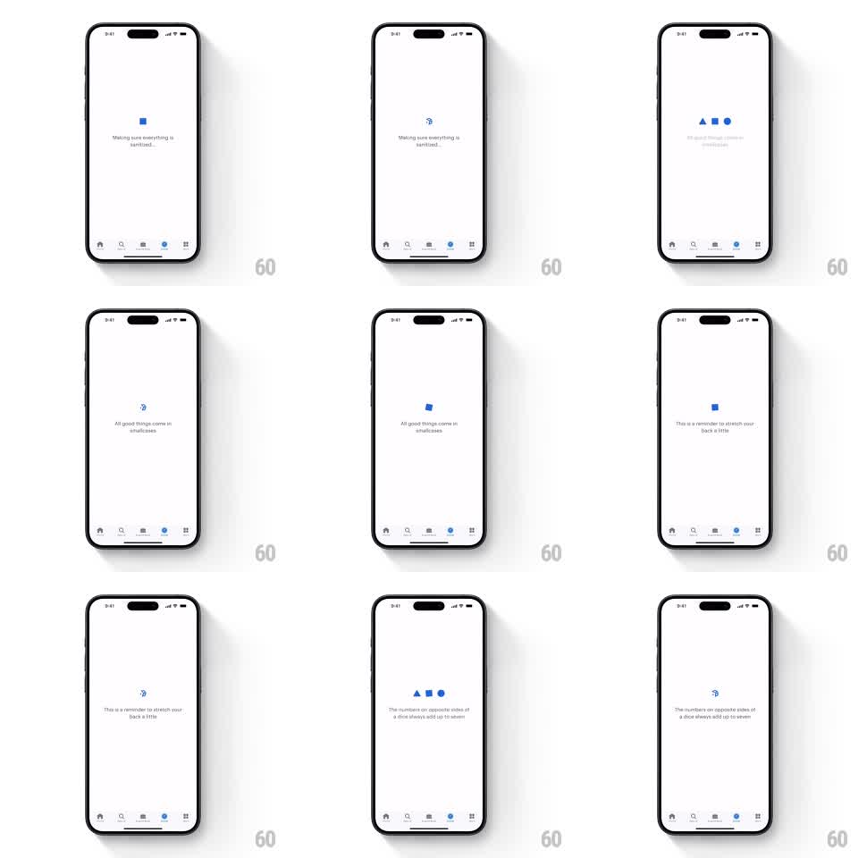

Media
Frame-by-frame

Rebuild this animation 1:1: smallcase's credit loader - three flat blue shapes (triangle, square, circle) that assemble, morph, and spin into the 3D smallcase logo while trivia lines crossfade beneath, all over the dimmed app.

Rebuild this animation 1:1: smallcase's credit loader - three flat blue shapes (triangle, square, circle) that assemble, morph, and spin into the 3D smallcase logo while trivia lines crossfade beneath, all over the dimmed app. ## Integration Integration: stack-agnostic spec - springs given as stiffness/damping, timed motions as duration + curve; map every value to your framework and animation library of choice. ## Scene The app behind (tab bar visible: Home, Discover, Investments, Loans, More) dimmed under a white veil. Center: a small loading stage - flat blue geometric shapes (a triangle, a square, a circle) that merge into the spinning smallcase logo (an open box / suitcase mark). Under it a single line of trivia that crossfades: "Making sure everything is sanitized...", "All good things come in smallcases", "This is a reminder to stretch your back a little", "The numbers on opposite sides of a dice always add up to seven". ## Motion spec Pattern: shape-morphing logo loader with rotating trivia. - The three shapes pop in staggered (60ms apart, scale 0 -> 1, spring ~340/14) in a row, then slide together (200ms) and merge. - The merged form spins into the 3D logo: a full rotateY revolution (700ms, ease-in-out) with a slight scale pulse at the flip point (1 -> 1.15 -> 1). - The logo then idles with a continuous slow spin (rotateY, 1.6s/rev) and a gentle bob (translateY +-3pt, 2s). - Trivia lines crossfade every 2.2s (old line fades down 4pt, new fades up, 250ms). - On completion: logo and text scale down and fade (250ms) as the white veil lifts (300ms). ## Calibration - Shapes are flat smallcase blue, no gradients; the 3D read comes from the spin, not shading. - The loader never blocks for a set duration - it dismisses on data ready, minimum 1.6s on screen. ## Reduced motion Static logo with a fade; trivia crossfades only. ## Don't miss - The merge-then-spin choreography: shapes -> single form -> one clean revolution -> idle spin. - Keep trivia single-line, centered, sentence case - it is wit, not marketing.